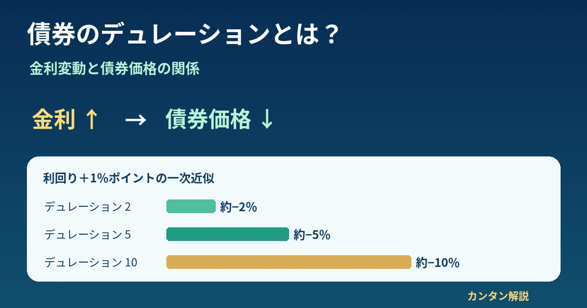

債券・金利・金融市場
債券のデュレーションとは？金利上昇で債券価格が下がる仕組みとリスクの見方を初心者向けに解説

同じ金利上昇でも、債券ごとに値下がり幅が違うのはなぜでしょうか。この記事ではデュレーションの種類、計算例、残存期間との違い、債券ETFの見方まで整理します。
1. デュレーションとは？
デュレーションは、債券の利払い・償還と金利変化を考えるための指標です。特に金利が変わったとき債券価格がどれほど動きやすいかを把握する際に使います。
ただし「マコーレー」「修正」「実効」では意味が異なります。資料の「デュレーション」がどの種類か、最初に確認しましょう。
2. なぜ金利が上がると債券価格は下がる？
市場で新たに発行される債券の利回りが上がると、従来の低い固定クーポンを受け取る債券は相対的に魅力が下がります。売買価格が下がることで、購入価格に対する利回りが新しい市場環境に近づきます。
詳しい基礎は国債価格・利回り・長期金利の関係を参照してください。これは固定利付債の基本的な説明です。変動利付債は利払いが見直されるため、価格の動き方が異なります。
3. デュレーションの種類を比較
| 種類 | 意味 | 単位・表示 | 主な用途 | 注意点 |
|---|---|---|---|---|
| マコーレー・デュレーション | 利息と償還金の現在価値を重みとした、キャッシュフロー受取時点の加重平均 | 年 | 回収時点の時間的な特徴の把握 | その数値を直接「利回り1％ポイント変化時の価格変化率」と読まない |
| 修正デュレーション | 利回りの小幅な変化に対する価格の一次感応度 | 通常は年に相当する値（表示は数値の場合も） | 価格変化率の概算 | 利回りの変化幅は小数で計算。大幅変化には近似誤差 |
| 実効デュレーション | 金利変化を与えて価格を再評価し、必要に応じてキャッシュフローの変化も反映した感応度 | 通常は年に相当する値 | 期限前償還・オプション付き債券など | 金利シナリオや評価モデルに依存。修正デュレーションと単純比較できない場合がある |
単純な固定利付債では修正デュレーションを用いる場面が多く、オプション性を持つ債券では実効デュレーションが有用です。各運用会社の定義も確認しましょう。
4. 修正デュレーションの計算例
架空の債券の修正デュレーションが5の場合、利回りが1％ポイント上昇（＋0.01）すると、−5×0.01＝約−5％。逆に1％ポイント低下（−0.01）なら約＋5％です。
「1％ポイントの上昇」と「利回りが1％増える（相対変化）」は異なります。たとえば利回り2％→3％は＋1％ポイントです。これは小幅変化を前提とした一次近似であり、実際の値動きを保証しません。
5. デュレーション別の価格変動比較
その他の条件を一定とし、各債券の利回りが一律に1％ポイント上昇したと仮定します。
| 修正デュレーション | 利回り＋1％ポイント時の価格変化（概算） |
|---|---|
| 2 | 約−2％ |
| 5 | 約−5％ |
| 10 | 約−10％ |
6. 残存期間とデュレーションの違い
残存期間は償還までの時間、マコーレー・デュレーションは利息と償還金を受け取るタイミングの現在価値加重平均です。固定利付債では償還前にクーポンを受け取るため、通常、マコーレー・デュレーションは残存期間より短くなります。
クーポンが高いほど早期に受け取るキャッシュフローの重みが増え、一般に短くなる傾向があります。利回りや償還までの期間も影響します。同じ残存期間でもクーポン条件が違えばデュレーションは異なります。
7. ゼロクーポン債との関係
途中の利払いがないゼロクーポン債は、原則として満期時にだけキャッシュフローを受け取ります。このためマコーレー・デュレーションは残存期間と一致します。ただし修正デュレーションは利回りの水準・複利の扱いに応じて調整されるため、残存期間と同じとは限りません。
8. コンベクシティとは？
債券価格と利回りの関係は直線ではなく、一般に曲線を描きます。修正デュレーションは現在の点に引いた接線の傾きを使う一次近似です。コンベクシティは、この曲がり具合を捉える指標です。
9. デュレーションが長い債券は危険？
長いデュレーションは金利変動に対する価格感応度が高いことを示しますが、債券の危険性すべてを表す数値ではありません。
| リスク | 確認したいこと |
|---|---|
| 金利変動 | 市場利回りの変化で時価が上下する |
| 信用 | 発行体の支払能力や信用スプレッドの変化 |
| 流動性 | 希望する価格で売却できるか |
| 為替 | 外貨建て資産の円換算価値 |
| インフレ | 受け取る利息・元本の購買力低下 |
短いデュレーションでも信用力の低い発行体や流動性の乏しい債券には別のリスクがあります。
10. 債券ETF・債券投資信託での見方
ファンドの月次レポートなどにあるデュレーションは、保有債券全体の金利感応度を把握する参考になります。平均残存年数とは別項目であることがあり、実効・修正などの定義も確認しましょう。
実際の基準価額は、分配金、信託報酬、信用スプレッド、為替、組入債券の入れ替え、利回り曲線の変化などの影響を受けるため、デュレーション×金利変化だけでは決まりません。
| 個別債券の満期保有 | 債券ETF・投資信託 |
|---|---|
| 所定の償還日があり、契約どおり償還されれば額面償還を受ける。ただし途中売却価格は変動 | 通常、ファンド自体に個別債券のような満期はなく、組入銘柄を入れ替えながら運用する |
| 満期保有でも発行体の信用リスク・インフレリスク・機会費用などは残る | 基準価額が変動し続け、費用・分配・為替等も影響する |
11. 金融ニュースでの使い方
- 長期金利が上昇：対象年限の利回りと保有債券のデュレーションを確認する。
- 中央銀行が利上げ：政策金利と個別債券の利回りは必ずしも同幅では動かない。
- 国債が売られた：価格低下と利回り上昇の基本関係を確認する。
- 債券ETFが下落：金利以外に信用スプレッド、為替、分配落ちなどを確認する。
- イールドカーブが変化：短期・中期・長期の利回りがそれぞれ違う幅で動くことを確認する。
12. 初心者向けチェックリスト
- デュレーションの種類を確認した
- 残存期間と混同していない
- 金利上昇時の概算を想定した
- 信用リスクを確認した
- 外貨建ての場合、為替リスクを確認した
- 債券ETFの組入債券・運用方針を確認した
- 利回りの変化幅と価格変化率を混同していない
13. よくある質問（FAQ）
債券のデュレーションとは何ですか？
利息・償還金の受取時点や、金利変化に対する価格感応度を考える指標の総称です。種類によって定義が異なります。
デュレーションが長いとどうなりますか？
他の条件が同じなら、一般に利回りの変化による価格変動が大きくなりやすくなります。
残存期間とデュレーションは同じですか？
同じではありません。残存期間は償還までの時間で、デュレーションはキャッシュフローの構成や利回りも反映します。
修正デュレーションとは何ですか？
利回りの小幅な変化に対する債券価格の変化率を一次近似するための指標です。
デュレーション5とはどういう意味ですか？
修正デュレーション5なら、利回りが1％ポイント上昇すると価格が約5％下がるという概算です。種類が不明なら断定できません。
金利が1％上がると債券価格は何％下がりますか？
一律には決まりません。修正デュレーション、どの利回りが何％ポイント変化したか、コンベクシティなどによります。
コンベクシティとは何ですか？
債券価格と利回りの曲線的な関係を捉える指標で、一次近似の誤差を考える助けになります。
債券ETFにもデュレーションはありますか？
あります。保有債券全体の金利感応度を表す参考値ですが、算出定義や運用方針を確認する必要があります。
満期まで保有すれば金利変動リスクはありませんか？
途中売却しなければ時価変動による売却損益を確定させずに済みますが、信用リスク、インフレリスク、機会費用は残ります。
14. まとめ
デュレーションは、債券の金利変動リスクを理解するための重要な手掛かりです。残存期間と混同せず、マコーレー・修正・実効の違いを確かめましょう。
修正デュレーションによる「−デュレーション×利回り変化幅」は便利な概算ですが、コンベクシティによる曲線性、信用・為替など他の要因によって実際の価格変動は異なります。
参考資料・注意事項
関連する制度や市場データは財務省 国債、日本銀行、日本証券業協会などの公式情報を参照してください。本記事のデュレーション2・5・10の数値例は架空の一次近似であり、特定商品の実績・予測ではありません。
本記事は金融教育を目的とした一般情報であり、特定の金融商品の売買を推奨するものではありません。正確性や将来の結果を保証しません。投資判断は各商品の最新の開示資料を確認のうえ、ご自身の責任で行ってください。